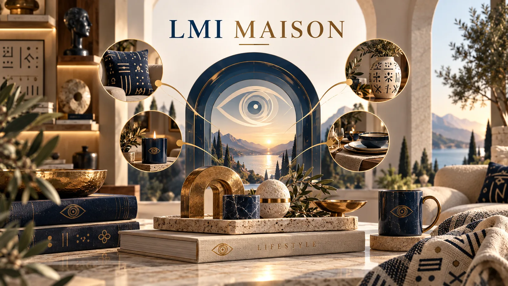

Choisir avec exigence
Toucher, tenue, finition, entretien et durée d’usage structurent chaque proposition.
Objets · Textile · Décoration
LMI Maison imagine un art de vivre où les matières, les signes et les usages dialoguent avec retenue. Chaque proposition cherche une présence juste : durable, lisible et reliée à son histoire.

Une maison éditée
LMI Maison prolonge l’univers LMI dans l’espace domestique. Le textile, l’objet et la décoration ne sont pas traités comme de simples ornements : ils portent une intention, un usage et une provenance qui doivent pouvoir être expliqués.
Toucher, tenue, finition, entretien et durée d’usage structurent chaque proposition.
Une grammaire claire guide la collection, sans accumulation ni emprunt décoratif sans contexte.
Chaque pièce doit rester belle, lisible et adaptée à la vie réelle de l’espace qu’elle rejoint.
Univers
Plaids, coussins, panneaux et pièces d’ambiance pour donner un rythme à l’espace.
Linge, jetés et éléments textiles pensés autour du repos et de la douceur.
Nappes, chemins et textiles de réception qui accompagnent le partage.
Objets et textiles pensés pour prolonger l’univers domestique vers les usages ouverts, avec des matières adaptées à leur destination.
Engagements LMI Maison
Les références culturelles, matières et droits sont documentés avant présentation définitive.
Composition, dimensions, entretien, disponibilité et prix ne sont affichés qu’après vérification.
Les pièces limitées sont reliées à une fiche, un numéro et un registre de concordance.